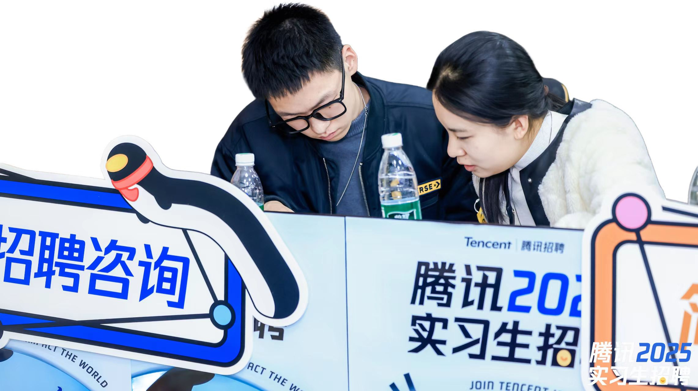
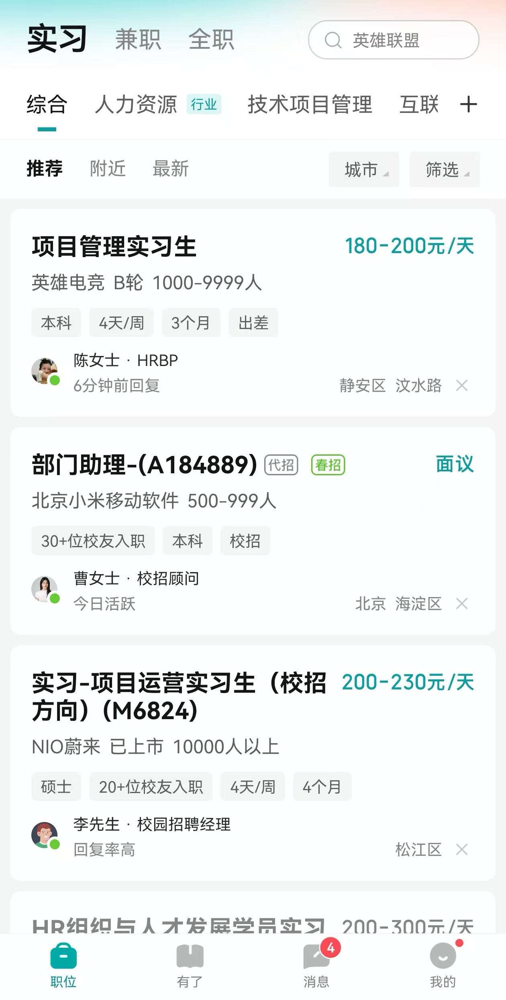
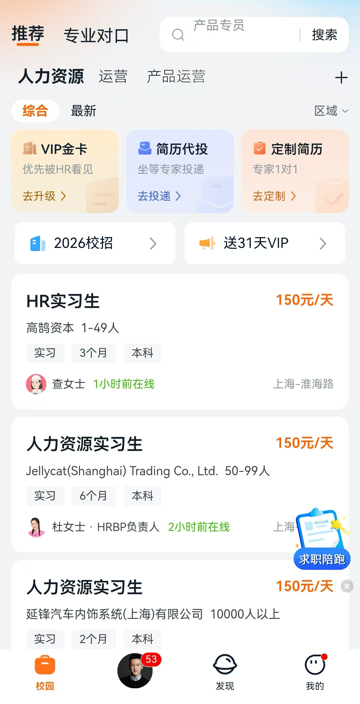
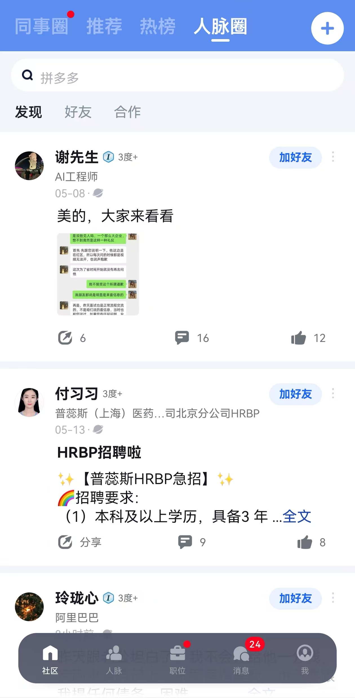
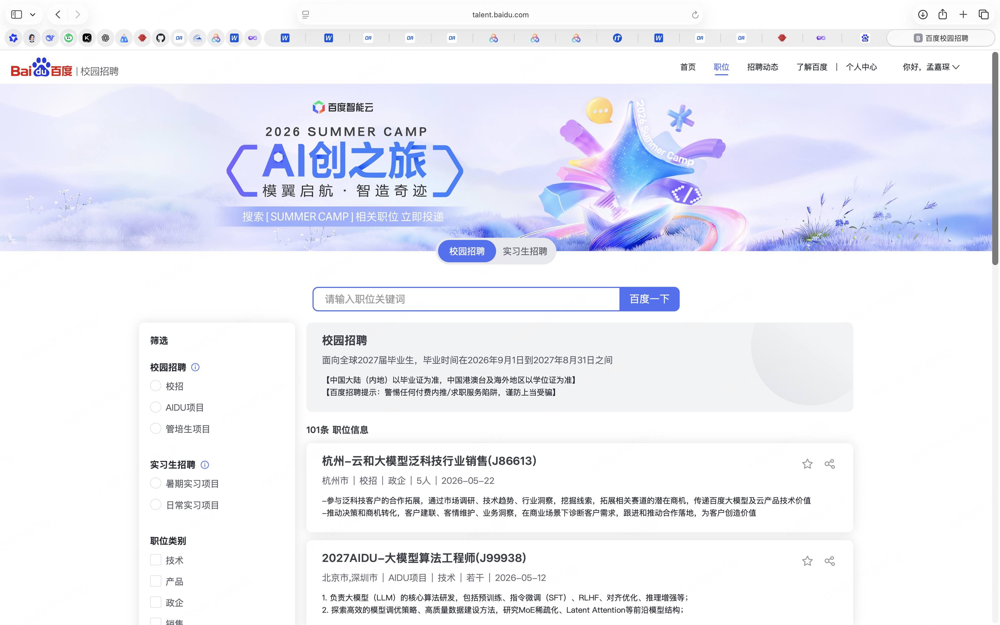
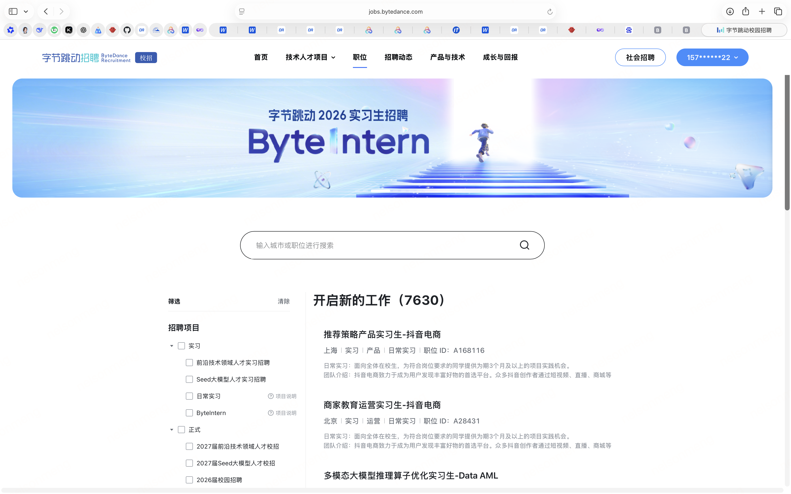
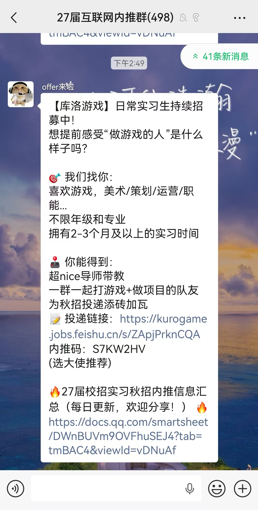
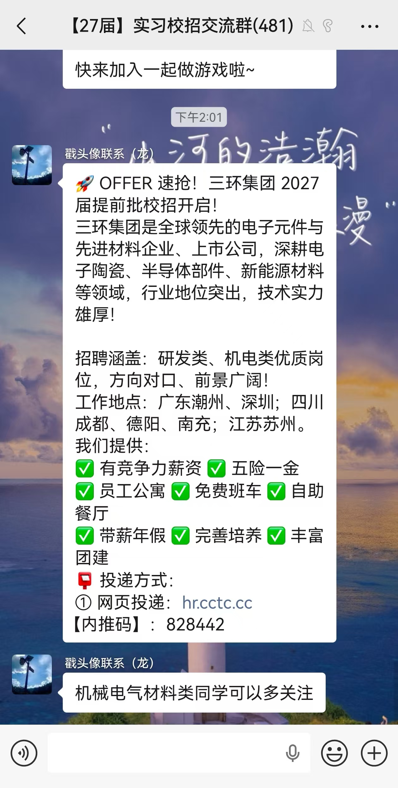
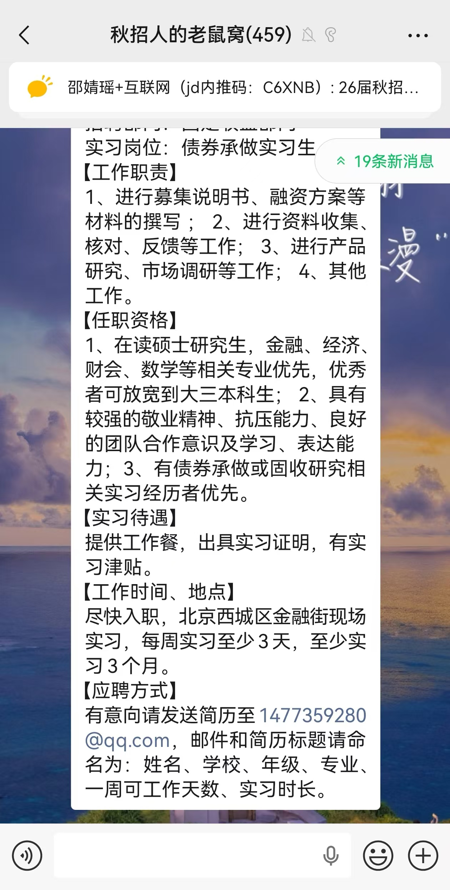

南京大学·硕士 马克思主义学院 思政 | 保送
南开大学·本科 思政 GPA 3.7 · 广电双学位 GPA 3.9
南开校团委学生负责人（统筹近400人）
天津市学联骨干 · 院学生会主席
SQL · Python · AI Coding · SPSS · PR/PS
ADADD广告资讯站 · 奖项管理系统 · AI Agent工具集
独立负责60+校园社群，覆盖全国重点高校；定期推送校招信息、答疑解惑、组织线上宣讲。
主牵3个中台功能建设，推动校招流程标准化与工具化——从手工操作到系统支撑。
制作15期校招运营快报，数据可视化呈现招聘进度、渠道效果、面试转化率。
校招数据核对→运营快报制作→招聘效率可视化→渠道成效分析。每一步都用数据说话，没有数据的运营就是拍脑袋。
我做的运营快报，从简历量→筛选→面试→offer→入职，全链路追踪，实时发现问题、动态调整策略。
校招的核心不是"招到人"，而是"招对人"。数据帮你看清：哪个渠道转化高？哪个环节流失大？哪类人才最难触达？
参与ICML/ICLR/CVPR国际机器学习大会/国际学习表征会议/计算机视觉与模式识别会议——AI领域三大顶会目标人才建联，完成深度访谈。
顶尖AI人才不会主动投简历——他们是被争抢的。校招团队需要主动出击，在顶会上建立联系、传递腾讯的技术愿景和研究资源，才能吸引到最优秀的人加入。
这就是为什么"HR也要懂业务"——你不懂AI在做什么，就没办法和AI科学家对话。

与PD合作进行职位整合，将UI开发、视觉设计、交互设计整合至产品体验设计。根据AI发展趋势，推动组织人才架构变化。
校招数据核对、运营快报制作、招聘效率可视化、渠道成效分析——没有数据的BP就是拍脑袋。
搭建广告资讯网站（自动抓取10平台）；荣誉激励线上化+企微Bot+知识库。在AI时代，会用工具的人效率完全不一样。
简历推荐→约面→面试跟进→谈薪→发offer→入职跟踪，BP深度参与全链路。
荣誉激励、HC盘点、招聘需求提报——BP是团队的"大管家"，支撑业务运转。
与ICML/ICLR/CVPR顶会目标人才建联，完成深度访谈；组内AI领域技术分享。
基于上游需求/监管指令完成风险研判、应急规则制定及处置，联动多方确保落地。
极端社会新闻站内发酵判断，根据工信部指令综合处置；研判100+舆情事件，快速判断风险等级并制定策略，P0零失误。
用Open Claw搭建6个自动化工具——前端巡检、策略写入查询导出、应急事件自动写入。AI重构工作流，确实在发生。
劣迹艺人转世、CNY、REDGALA、AI治理等专项——从研判标准制定、规则撰写、策略输出到回查风险判定，发挥中台角色。P0级别零重大风险。
撰写BRD文档，协助小红鹰应急协同板块功能迭代，赋能多风险域协同和数据透视。
通过暑期实习转正，拿的就是秋招offer。28年毕业的话，27年2月就要开始关注，最早8月就能拿到保底offer。
主要渠道（点击图片看大图）





找实习交流群，继任招聘、团队新增需求都有发布，还能认识人脉。很多机会不出现在官网上。



可以写全，不限一页——HR上下滑着看，信息越多越好
必须一页纸——但不意味着内容少，做过的事可以高度凝练
投HR突出HR，投产品突出产品，别海投
投产品岗 → 产品经历放前面，HR经历只突出AI搭建能力
投HR岗 → HR经历放前面，产品经历简写
秋招最多准备3-4份简历，每份都要拿得出手
以结果推过程，别堆背景
先说做了什么项目、你的定位是什么，再说你做了哪些关键动作、贡献了什么。
❌ 把背景和执行全堆上去
✅ "我负责XX项目，独立完成XX步骤，GMV提升XX%"
数字比形容词有说服力100倍
❌ "参与招聘工作"
✅ "月内入职30+人，日均推荐20份简历，通过率60%"
用数字替换模糊词
简历能看出你的态度
不是花里胡哨，但至少字要对齐、内容要清晰。
3-4份简历，每份都拿得出手——至少是干净的、简洁的、内容清楚的。